Regesta Imperii online
Table of Contents
Abstract
Regesta Imperii (RI) online is one of the fundamental platforms for medieval research. RI stands for a combination of tradition and innovation. Based on the printed volumes which have been released since the early 19th century up until now, the text collection brings together the traditional arrangement of the research project and the wide range of new possibilities resulting from the digital form of presentation. The long-term work process implies some consequences concerning the quality of the provided data: As the regests are transmitted on the website without revision, there are data records in different forms of elaborateness (length, details). With RIplus an additional, born-digital component, is available which offers data from volumes that haven't been published yet (work in progress), as well as data from other related research projects. RI provides all the regests in CEI, a subset of TEI-XML for diplomatic documents. Furthermore, the digital content (images, editions, authority files) is highly interlinked so that RI online spans a wide network for digital medieval research. All contents of RI online are freely available for subsequent use. Even though regests represent not transcriptions but summaries of charters, the data can serve as a “text collection” for different proposes, for instance, to study structural aspects of medieval forms of ruling or to explore the development of the research project itself from the perspective of history of science. Different approaches to analyze and visualize the data show the potential of this text collection for digital historians, as well as for (computer-)linguistic research.
Wer sich mit der Geschichte des Mittelalters von den Karolingern bis hin zu Maximilian I. beschäftigt, kommt früher oder später bzw. besser früher als später in Kontakt mit den Regesta Imperii (RI). Das Angebot der Regesten, d.h. Kurzzusammenfassungen rechtlich relevanten Inhalts von Herrscher- und Papsturkunden, einschließlich Angaben zu ihrer Überlieferung und zum Forschungsstand, gehören zum Standard jeder wissenschaftlichen Beschäftigung mit der Epoche zwischen 7511 und 1519, um an dieser Stelle sogleich den zeitlichen Rahmen zu benennen. Kurzum, jede/r Studierende der Geschichtswissenschaften kommt im Laufe des Studiums spätestens im Proseminar zur Mittleren Geschichte mit dieser Textsammlung in Berührung.
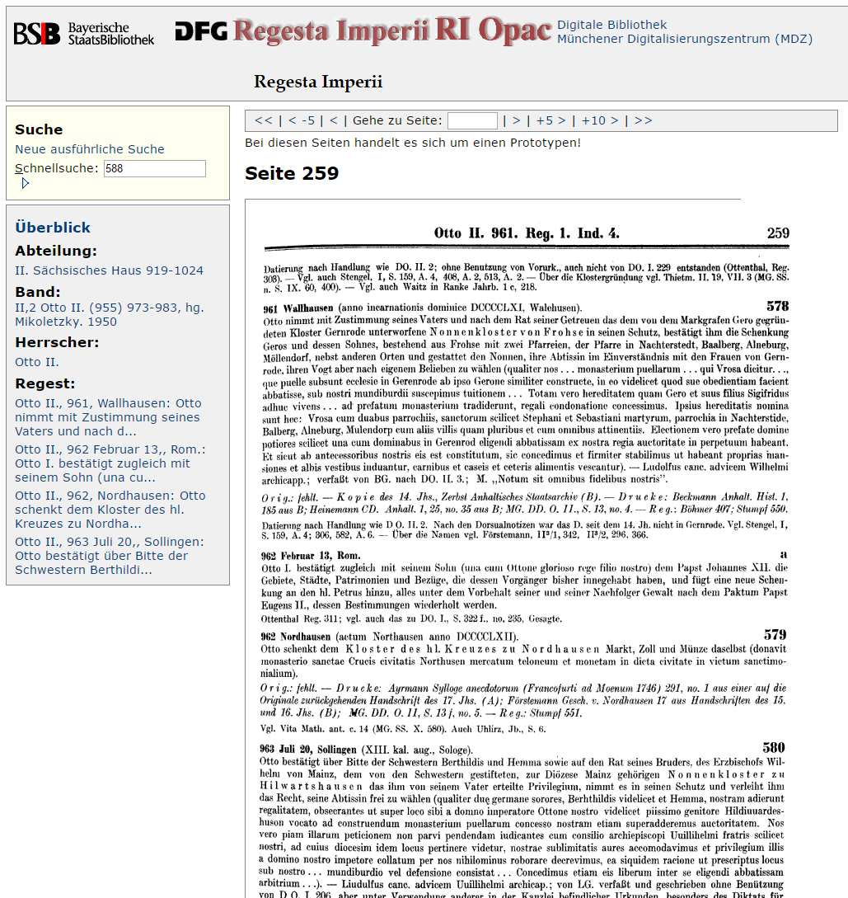
Qualität der Daten im Spiegel ihres Entstehungskontextes
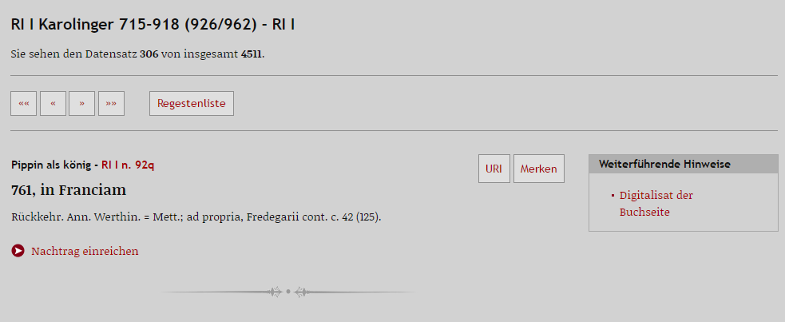 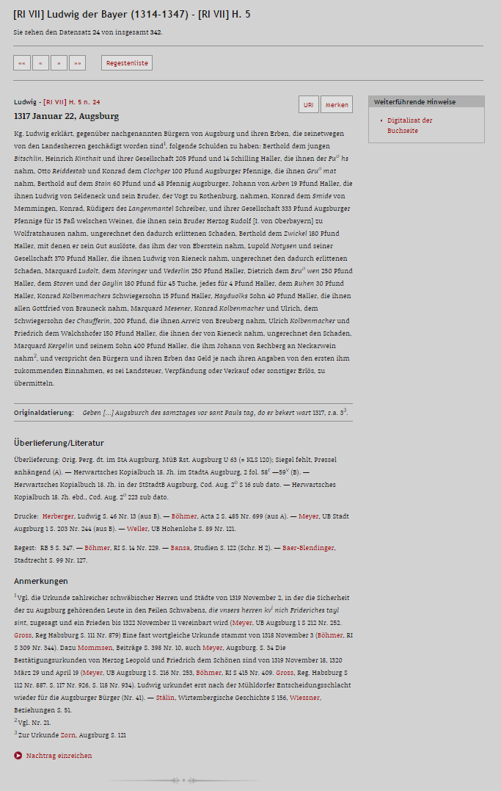
Während die älteren Bände zunächst retrodigitalisiert und anschließend als Hypertext online zugänglich gemacht wurden, werden alle nach Abschluss des DFG-Projekts veröffentlichten Bände unmittelbar in Hypertext wiedergegeben. Da die Veröffentlichungsrechte bei der AdW Mainz liegen, erfolgt die Bereitstellung des Materials ohne Moving Wall. Dieser Goldene Weg des Open Access trifft ebenso auf die österreichischen und tschechischen Bandausgaben der Reihe zu. Ihnen allen gemein ist, dass die Regesten ohne vorangehende Überarbeitung aus den Druckausgaben in das digitale Medium überführt werden. Da es sich bei den RI um ein großangelegtes und äußerst langlebiges Forschungsunternehmen handelt, resultieren aus dem Entstehungskontext der Textsammlung zwei Aspekte, die es beim Umgang mit den Forschungsdaten zu berücksichtigen gilt:
Einerseits unterliegt die Ausgestaltung der Regesten aus den seit 1839 im Druck erschienenen Bänden naturgemäß stilistischen und inhaltlichen Schwankungen, insbesondere hinsichtlich der Ausführlichkeit des Informationsgehalts (vgl. Abb. 2 und Abb. 3).8 Andererseits existieren in der digitalen Fassung gewisse Redundanzen, da manch historisches Ereignis in unterschiedlichen Bänden mehrfach als Regest erfasst wurde. Eine Bereinigung des Gesamtbestandes (beispielsweise die Optimierung bestehender Binnenlinks zwischen inhaltlich identischen Regesten) erfolgt sukzessive. Die Orientierung an der Form der Druckausgaben bleibt davon unberührt. Für Nutzer des Online-Angebotes besteht aber die Möglichkeit, Nachträge einzureichen, die von der Redaktion geprüft und nach Freigabe unterhalb des ursprünglichen Regests erscheinen.9 Überlegungen, die Verbesserungen unmittelbar in das Regest einfließen zu lassen, wurden bisher nicht realisiert. Hilfreich könnte in diesem Zusammenhang die Einführung einer Versionierung der (überarbeiteten) Regesten sein.
RI online – (k)eine klassische Textsammlung
Die einzelnen Bände und damit die Regesten selbst unterliegen folglich deutlichen Unterschieden in Umfang und Ausgestaltung der Metainformationen. Wenngleich es sich nicht um Volltexteditionen von Urkunden handelt, kann die Frage, ob es sich bei RI online um eine Textsammlung handelt, bejaht werden: Einerseits bieten die Metadaten die Möglichkeit, sich dem Material aus unterschiedlichen Forschungsinteressen her zu nähern, beispielsweise um strukturelle Aspekte mittelalterlicher Herrschaft zu ergründen. Informationen über Ort und Datum der Ausstellung, beteiligte Personen und Zeugen lassen sich aus verschiedenen geschichtswissenschaftlichen Perspektiven heraus auswerten. Auch aus wissenschaftsgeschichtlicher Sicht ist eine Beschäftigung mit den RI als Textsammlung lohnend. Mit Hilfe linguistischer Methoden kann ergründet werden, wie sich die Erstellung der Regesten trotz des Festhaltens an traditionellen Bearbeitungsgrundsätzen über die Jahrzehnte hinweg verändert hat. Hinsichtlich der Auswertung von Metainformationen wäre eine deutlichere Kennzeichnung, welche Metadaten in welchen Bänden durchgängig vorhanden sind, hilfreich. Dennoch lassen sich auf die vorhandenen Textinformationen innovative Zugänge anwenden, die zu neuen Erkenntnissen führen können. Darauf wird weiter unten an exemplarisch ausgewählten Projekten zurückzukommen sein.
Born digital-Angebote und Work in Progress
Neben den ursprünglich in Buchform erschienenen Einträgen existiert mit RIplus 10 ein born digital-Angebot, das die Textsammlung sukzessive erweitert (derzeitiger Stand: ca. 40.000 Regesten). RIplus versteht sich als Zusatzangebot, welches die klassischen 14 herrscher- und dynastiebezogenen Abteilungen der RI um Handlungen einflussreicher Akteure innerhalb des Reiches (sog. „Große“) ergänzt.11 Andererseits werden Vorabversionen noch nicht erschienener RI-Bände geliefert.12 Interessierten Institutionen steht es frei, von ihnen erschlossene Quellen dem RI-Schema folgend in das Angebot einzuspielen.13 Dem Nutzer obliegt dabei stets die Entscheidung, ob die unter RIplus zusammengefassten Zusatzangebote in die Suche einbezogen oder nur die ‚klassische‘ Textsammlung konsultiert werden soll. In diesem Zusammenhang möge die Rubrik „ePublikationen“ nicht unerwähnt bleiben. Darin finden sich weitere Veröffentlichungen von Teilergebnissen aus der Arbeit des Regestenunternehmens, um diese der interessierten Fachöffentlichkeit bereits vorab zugänglich zu machen. Dies wiederum ist als positives Beispiel für Preprint und Open Access anzusehen.
Ein Netzwerk für die Mittelalterforschung
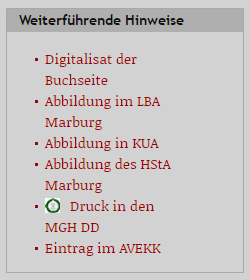
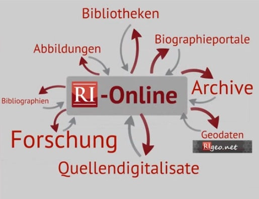
Zugänge zur Textsammlung
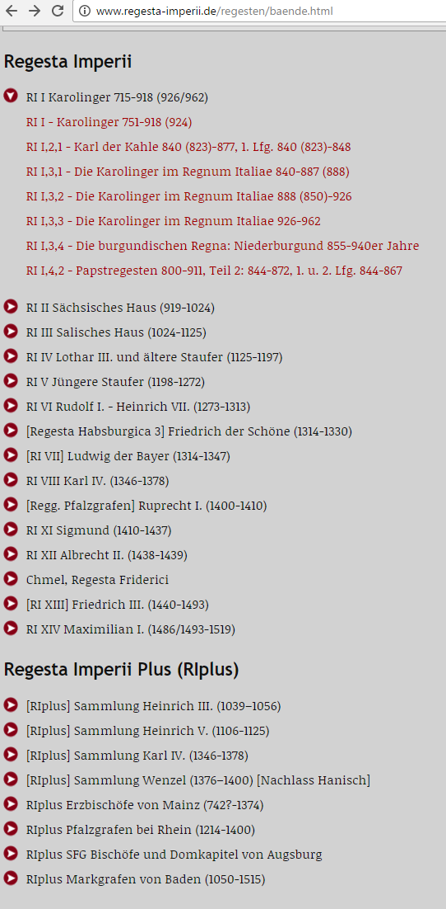 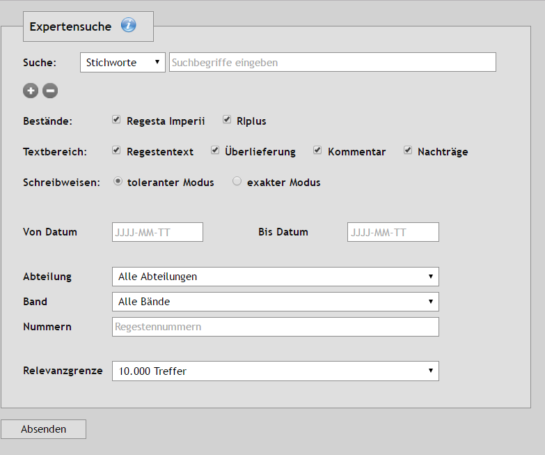
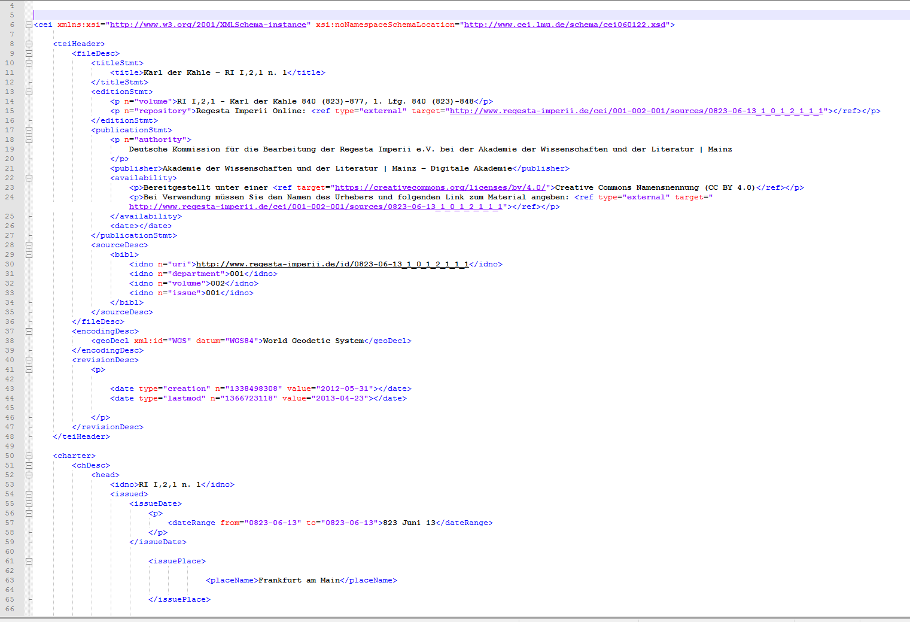
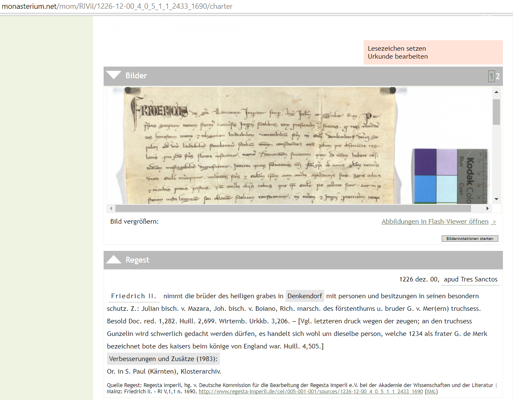
Die Erfassung und Auszeichnung von Metainformationen innerhalb der RI im CEI-Format unterliegt den eingangs skizzierten Schwankungen hinsichtlich der Ausführlichkeit der vorhandenen Daten. Zu berücksichtigen gilt, dass nur die Metadaten29 und die Formalstrukturen, d.h. die Einordnung des Einzelregests in das Gesamtangebot der RI (Abteilung, Band, Heft) in CEI abgebildet werden; jenseits der Metadaten findet keine Annotation der Regestentexte selbst statt. Es sollte jedoch bedacht werden, dass ein Regest einschließlich der Inhaltswiedergabe per se (ganz ohne digitalen Aspekt) die „Metadaten“ einer Urkunde darstellt. Da es sich nicht um den Originalwortlaut sondern um von Historikern verfasste Zusammenfassungen handelt, kann der Verzicht auf Auszeichnung der Regestentexte als gattungsspezifisch konsequent bewertet werden.
Neben der kompletten Textsammlung können über die Schnittstelle wahlweise auch ausgewählte Bände exportiert werden.30 Neben der bestehenden eindeutigen Referenzierbarkeit eines jeden Datensatzes (via URI) wäre auch eine XML-Exportfunktion (per Mausklick) für das Einzelregest zu begrüßen. Dies gilt ebenso für eine persistente Verlinkung auf Suchabfragen und einzelne Bandseiten. Auf Anfrage wird die Textsammlung auch in relationaler Form für eine Weiterverarbeitung zur Verfügung gestellt.31 In allen genannten Fällen können die Inhalte unter einer CC BY 4.0 International Lizenz,32 d.h. unter Namensnennung und Angabe der vorgenommenen Veränderungen, auch zu kommerziellen Zwecken nachgenutzt werden.
Analyse und Visualisierung der Daten
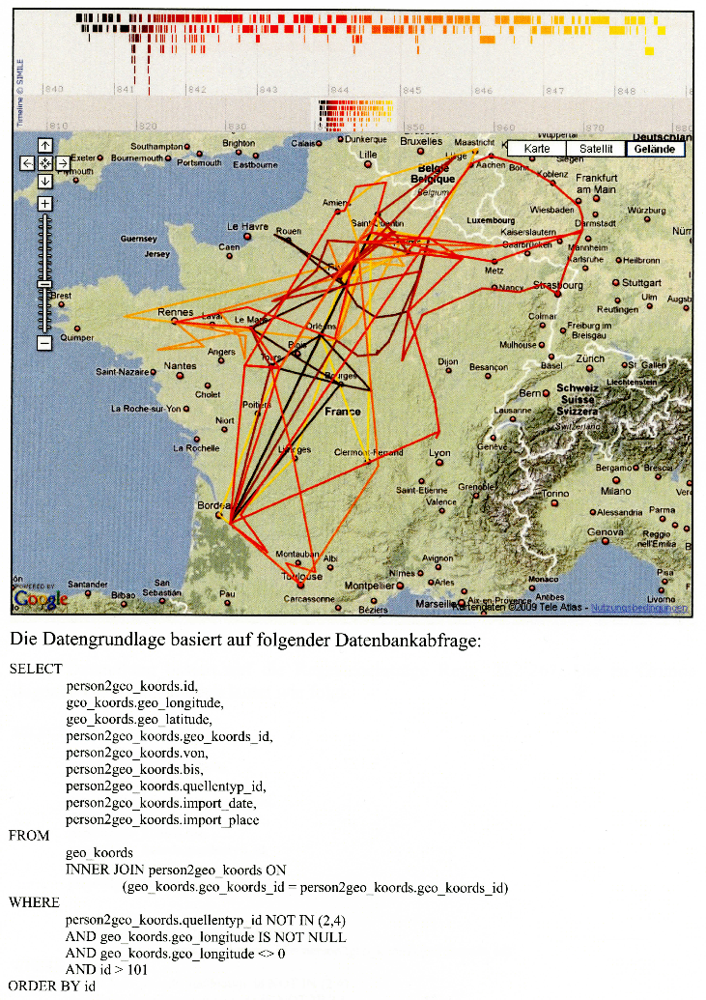 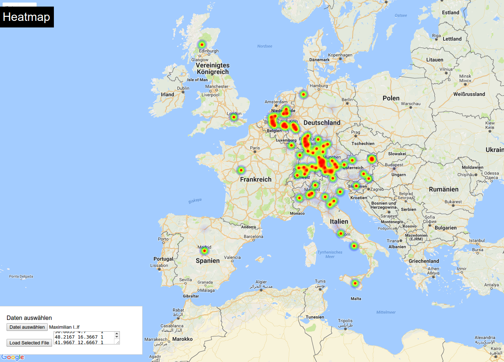
Ein naheliegendes Forschungsinteresse stellt die Itinerarforschung dar, d.h. das Nachvollziehen herrscherlicher Reisetätigkeiten innerhalb des Reiches. Ein frühes Beispiel hinsichtlich der Beschäftigung mit einem Reiseitinerar stellt „Iterregis“ dar: Eine im Jahr 2009 eingereichte Magisterarbeit zeichnet mit Hilfe von Google Maps und der darauf abgestimmten Zeitstrahlsoftware Timemap ein digitales Abbild des ersten RI-Bandes zu Karl dem Kahlen (840-848) (Abb. 10).33 Auch Aufenthalts- bzw. Frequenzitinerare, d.h. die Untersuchung, ob es sich bei einem Gebiet um eine königsnahe oder -ferne Region handelt, standen bereits im Fokus verschiedener Projekte. Zu nennen sei ein Versuch, der im Rahmen des Hackathons ‚Coding Da Vinci‘ 2015 angestellt wurde und auf Grundlage von Regesten die Einflussräume von Herrschern in Form einer Heatmap darstellte.34 Zuletzt hat das Big Data-Praktikum der Informatik an der Universität Mainz die Textsammlung auf das Reiseverhalten und die über die Häufigkeit der Urkunden sichtbare räumliche „Wirksamkeit“ der einzelnen Herrscher visualisiert (Abb. 11).35 Ein längerfristiges Vorhaben zur Ergründung raumbezogener Analysemöglichkeiten am Beispiel der Regesta Imperii ist das an der Universität Heidelberg angesiedelte Kooperationsprojekt RIgeo.net.36
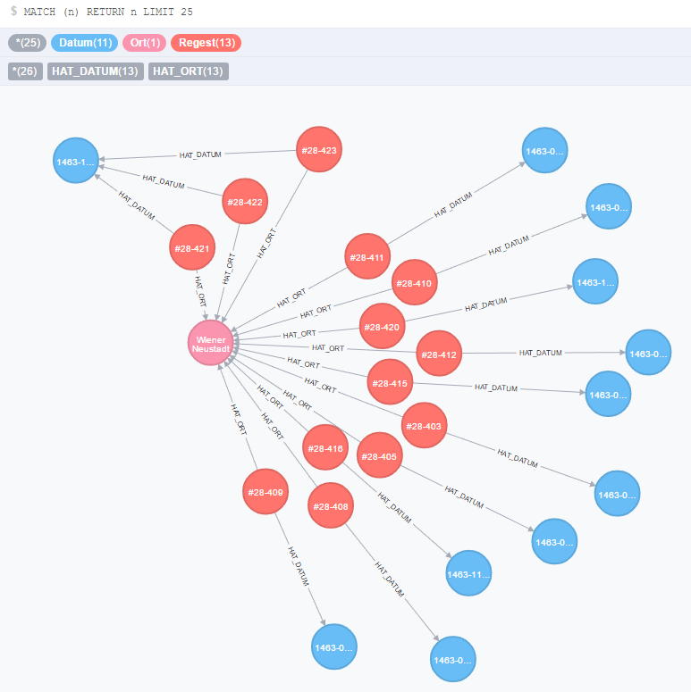
Fazit
RI online steht für Tradition und Fortschritt in gleichem Maße. Die Verpflichtung gegenüber den Grundsätzen des nunmehr seit annähernd 180 Jahren bestehenden Forschungsunternehmens geht einher mit dem fortwährenden Streben nach Optimierung und Innovation. Die Textsammlung wird auch künftig erweitert, neue Bände werden analog zum Druck ohne Moving Wall eingepflegt sowie bestehende Angebote ergänzt und überarbeitet. Die RI stellen damit ein positives Beispiel für Work in Progress in der Geschichtswissenschaft dar. Eine langfristige Nutzung der Daten und ihre Kuratierung werden durch die institutionelle Anbindung an die AdW Mainz dauerhaft gewährleistet.
Dieser stetige Bearbeitungsprozess spiegelt sich in der Qualität der Forschungsdaten wieder. Da sie beim Übergang vom gedruckten Medium auf die Onlineplattform nicht überarbeitet werden, unterliegen sie deutlichen stilistischen und inhaltlichen Schwankungen. Dies betrifft ebenso den Grad der Verknüpfung der einzelnen Regesten mit andere zentralen Ressourcen zur Geschichte des Mittelalters. Es wird in diesem Zusammenhang langfristig darüber nachzudenken sein, ob eine Loslösung von der klassischen (Druck)form – beispielsweise mit Hilfe von Versionierungen – denkbar erscheint.
Sämtliche Regestendaten werden unter einer Creative Commons-Lizenz zur Nachnutzung bereitgestellt. Ob über die REST-Schnittstelle oder in relationaler Form, die Textsammlung lädt zum Download ihrer Bestände für die weiterführende Forschung ein. Wenngleich es sich bei Regesten nicht um die Volltextedition von Urkunden handelt, kann das Angebot als Textsammlung bezeichnet werden. Die Verwendung des TEI-Subsets CEI zur Annotation von Metadaten ermöglicht verschiedene Formen des Zugangs und der Auswertung des dargebotenen Materials bzw. der Textdaten. Gleichzeitig wird eine Verknüpfung mit anderen diplomatischen Angeboten seitens der MGH oder monasterium.net ermöglicht und damit der Weg hin zu einer umfänglichen digitalen Diplomatik mitgestaltet.
Abgesehen von den Metadaten erfolgt keine Auszeichnung der Regestentexte. Dass eine Weiterverarbeitung, Analyse und Visualisierung der Metainformationen und Texte dennoch lohnend sein kann, zeigt eine Reihe digitaler Forschungsprojekte, die auf Grundlage der RI erarbeitet wurden oder im Entstehen begriffen sind. Eine Implementierung innovativer Zugänge zum Material seitens der Plattform selbst stellt ein Desiderat dar. Die angekündigte Aufbereitung der Register zu den einzelnen Bänden und ihre Anreicherung mit Normdaten wird die eingeschlagenen Zugänge der Forschung auf die Textsammlung wesentlich bereichern. Die sukzessive Erweiterung des digitalen Angebotes verspricht die zentrale Stellung der Regesta Imperii innerhalb der Mittelalterforschung zu untermauern. Gleichzeitig ist mit wachsendem Textdatensatz und steigender Erschließungstiefe damit zu rechnen, dass sich die Textsammlung zukünftig nicht nur für qualitative Untersuchungen einzelner Regesten, sondern verstärkt auch für quantitative Analysen der Regestensammlung fruchtbar machen lässt.
Bibliography
- Heinig, Paul-Joachim und Klaus Herbers. 2014. "Arbeitsbericht der Regestenkommission von 2014", abrufbar unter: http://www.regesta-imperii.de/fileadmin/user_upload/downloads/Kommission_fuer_die_Bearbeitung_der_Regesta_Imperii_Bericht_2014.pdf.
- Kuczera, Andreas. 24. August 2016 (letzte Aktualisierung). "Graphbasierte digitale Editionen". Mittelalter. Interdisziplinäre Forschung und Rezeptionsgeschichte, http://web.archive.org/web/20170812111931/http://mittelalter.hypotheses.org/7994.
- Kuczera, Andreas. 24. August 2016 (letzte Aktualisierung). "Graphdatenbanken für Historiker. Netzwerke in den Registern und Regesten Kaiser Friedrichs III. mit neo4j und Gephi". Mittelalter. Interdisziplinäre Forschung und Rezeptionsgeschichte, http://mittelalter.hypotheses.org/5995.
- Kuczera, Andreas und Dieter Rübsamen. 2006. "Verborgen, vergessen, verloren? Perspektiven der Quellenerschließung durch die digitalen Regesta Imperii". Forschung in der digitalen Welt. Sicherung, Erschließung und Aufbereitung von Wissensbeständen, hrsg. v. Rainer Hering u.a.: 109-123, http://web.archive.org/web/20170812104922/http://hup.sub.uni-hamburg.de/volltexte/2008/77/chapter/HamburgUP_Forschung_RuebsamenKuczera.pdf.
- Opitz, Juri und Anette Frank. 2016. "Deriving Players & Themes in the Regesta Imperii using SVMs and Neural Networks". Proceedings of the 10th SIGHUM Workshop on Language Technology for Cultural Heritage, Social Sciences, and Humanities: 74-83, https://aclweb.org/anthology/W/W16/W16-2108.pdf.
- Rest, Sebastian. 2009. Computergestützte Itinerarforschung am Beispiel Karls des Kahlen (unveröffentlichte Magisterarbeit inkl. CD-Rom, eingereicht bei Irmgard Fees).
- Rübsamen, Dieter und Kornelia Holzner-Tobisch. 2016. "Regesta Imperii. Bericht über den Stand und die Fortführung der Arbeiten im Jahr 2016/17". DA 72, 2: 607-617.
- Thaller, Manfred (Red.), 2015. "Retrospektive Digitalisierung von Bibliotheksbeständen. Evaluierungsbericht über einen Förderschwerpunkt der DFG. Köln 2005", http://www.dfg.de/download/pdf/foerderung/programme/lis/retro_digitalisierung_eval_050406.pdf.
- Weber, Yannick. 21. März 2016 (letzte Aktualisierung): "Regesta Imperii plus", Mittelalter. Interdisziplinäre Forschung und Rezeptionsgeschichte, http://web.archive.org/web/20170812105247/http://mittelalter.hypotheses.org/7911.
- Weller, Tobias. 2014. "Die Regesta Imperii Online". Rheinische Vierteljahrsblätter 78: 234-241, http://web.archive.org/web/20170812104738/http://regesta-imperii.de/fileadmin/user_upload/downloads/Weller_RI_Online.pdf .
Notes
- Neben Urkunden werden bei Herrschern des Früh- und Hochmittelalters bis Heinrich VII. (1308-1313) auch Belege aus narrativen bzw. sämtlich verfügbaren Quellen als Regesten herangezogen. Die ersten Fundstellen, die als Einträge aufgenommen wurden, gehen auf das Jahr 612 zurück und liegen damit vor dem genannten Datum des ersten Urkundenregests. ↑
- Regesta Imperii online: http://web.archive.org/web/20170812104527/http://www.regesta-imperii.de/startseite.html (Letzter Aufruf aller zitierten Internetressourcen: 13.09.2017). ↑
- Für eine zeitgenössische Evaluierung des DFG-Projekts vgl. Thaller 2015, 135. ↑
- Für einen stärkeren Fokus auf den Aufbau der Plattform aus inhaltlicher Sicht sei auf die Rezension von Tobias Weller (2014) verwiesen. ↑
- Vgl. Kuczera und Rübsamen 2006, 109f. ↑
- Vgl. beispielsweise: „[RI VII] H. 4 n. 17“ für das Regest Nr. 17 in Heft 4 der Regesten Kaiser Ludwigs des Bayern; URI: http://www.regesta-imperii.de/id/1322-12-21_1_0_7_4_0_17_17 . Die Abkürzung verweist auf den zugehörigen Eintrag im Bibliothekskatalog der RI mit den vollständigen bibliographischen Angaben zum entsprechenden Band. ↑
- Der Katalog der RI verzeichnet inzwischen über 1,9 Millionen Titel (Monographien wie Aufsätze gleichermaßen), die die europäische Mittelalterforschung in ihrer epochalen Breite und sämtliche Fachdisziplinen gleichermaßen abdeckt; vgl. http://web.archive.org/web/20170812105032/http://opac.regesta-imperii.de/lang_de/. ↑
- Vgl. hierzu Kuczera und Rübsamen 2006, 116-120. ↑
- Seit 2009 wurden bis heute 1660 Nachträge durch die Redaktion freigeschaltet; vgl. http://web.archive.org/web/20170913171109/http://www.regesta-imperii.de/regesten/nachtraege.html. ↑
- Für eine Beschreibung der Weiterentwicklung des klassischen Angebotes vgl. Weber 2016. ↑
- Zu nennen seien beispielsweise die Erzbischöfe von Mainz (742?-1374), vgl. http://web.archive.org/web/20170812105336/http://www.regesta-imperii.de/regesten/20-11-1-mainz.html, oder die Pfalzgrafen bei Rhein (1214-1400), vgl. http://web.archive.org/web/20170812105420/http://www.regesta-imperii.de/regesten/20-14-1-pfalzgrafen.html. ↑
- Gesteigertes Interesse erfährt insbesondere die Urkunden-Datenbank zu Friedrich III. (1440-1493); vgl. http://web.archive.org/web/20170812105504/http://f3.regesta-imperii.de/. ↑
- Zu nennen seien exemplarisch die Regesten zu den Bischöfen und dem Dompakitel von Augsburg: http://web.archive.org/web/20170812105737/http://www.regesta-imperii.de/regesten/20-18-1-augsburg.html. Die Dateneingabe erfolgt durch die Bearbeiter der Schwäbischen Forschungsgemeinschaft unmittelbar über das CMS Typo3 der RI. ↑
- Startseite der digitalen MGH (dmgh): http://web.archive.org/web/20170812105808/http://www.dmgh.de/. ↑
- Startseite des Württembergischen Urkundenbuchs online (WUB): http://web.archive.org/web/20170812105903/https://www.wubonline.de/. ↑
- Startseite des LBA Marburg: http://web.archive.org/web/20170812105940/http://lba.hist.uni-marburg.de/lba/. ↑
- Zu nennen seien an dieser Stelle insbesondere das Archivinformationssystem Hessen (Archinsys, vgl. http://web.archive.org/web/20170812110015/https://arcinsys.hessen.de/arcinsys/start.action) und die von der BSB München durchgeführte Retrodigitalisierung der ‚Kaiserurkunden in Abbildungen‘; vgl. http://web.archive.org/web/20170812110136/http://geschichte.digitale-sammlungen.de/kaiserurkunden/online/angebot. ↑
- Das AVEKK, zunächst in Druck erschienen (Irmgard Fees, Abbildungsverzeichnis der original überlieferten fränkischen und deutschen Königs- und Kaiserurkunden von den Merowingern bis zu Heinrich VI., Marburg 1994), wird im Rahmen des Projekts ‚hgw-online.net‘ an der LMU München betreut; vgl. http://web.archive.org/web/20170812110205/http://www.hgw-online.net/abbildungsverzeichnis/. ↑
- Vgl. exemplarisch den kürzlich eingestellten Band zu Heinrich IV., der bei insgesamt 1572 Regesten etwa 2000 Verlinkungen aufweist. ↑
- Die Gesamtzahl der online verfügbaren Regesten befindet sich tagesaktuell über der Suchleiste; vgl. http://web.archive.org/web/20170812110308/http://www.regesta-imperii.de/regesten/suche.html.. ↑
- Nicht eingerechnet sind in diesen Zahlen Verlinkungen aus RIplus. Herauszurechnen sind überdies die eingangs genannten redundanten Regesten. Es gilt zu berücksichtigen, dass für die Mehrzahl der über 176.000 Regesten keine verlinkbaren Angebote existieren (vgl. Anm. 1). ↑
- Die Funktionalitäten der einzelnen Suchfelder werden auf einer Hilfe-Seite ausführlich dokumentiert; vgl. http://web.archive.org/web/20170812104527/http://www.regesta-imperii.de/regesten/hilfe.html. ↑
- Die Autorennamen im RI-OPAC wurden bereits mit GND-Nummern versehen; eine Beacon-Datei steht zum Download bereit: http://web.archive.org/web/20170812110427/http://regesta-imperii.de/fileadmin/user_upload/downloads/beacon_ri.txt. ↑
- Vgl. http://web.archive.org/web/20170812110951/http://www.regesta-imperii.de/regesten/register.html. ↑
- Für einen Überblick zur Charters Encoding Initiative (CEI) vgl. http://web.archive.org/web/20170812111033/http://www.cei.lmu.de/project. ↑
- Einen ähnlichen Ansatz verfolgt EpiDoc (https://sourceforge.net/p/epidoc/wiki/Home/) als strukturiertes Markup für Inschriften. ↑
- Vgl. den Prototyp auf monasterium.net: http://web.archive.org/web/20170812111353/http://monasterium.net/mom/RIViI/collection. Die Anreicherung erhebt keinen Anspruch auf Vollständigkeit, sondern ist als ein erster Schritt auf dem Weg hin zu einer systematischen Verknüpfung beider Angebote zu sehen. ↑
- Diese Information beruht auf der Aussage eines der Mitbegründer der CEI, Georg Vogeler, an dessen Forschungseinrichtung die Migration erfolgen soll. ↑
- Als Metadaten werden die genannten Personen, Zeit- (ISO-konform) und Ortsangaben erfasst, letztere etwa zur Hälfte ergänzt um Geoinformationen. Vgl. hierzu Rübsamen und Holzner-Tobisch 2016, 616f. ↑
- Vgl. die Dokumentation zur Benutzung der Schnittstelle: http://web.archive.org/web/20170812111426/http://www.regesta-imperii.de/daten.html. ↑
- Über diesen Weg erfolgte die jüngst durch den Rezensenten abgeschlossene Verlinkung der RI im AVEKK. In diesem Zusammenhang sei auf die stets zügige und kompetente Beratung durch die Betreuer der RI online (http://web.archive.org/web/20170812111503/http://www.regesta-imperii.de/unternehmen/ri-online.html) hingewiesen. ↑
- Vgl. https://creativecommons.org/licenses/by/4.0/. Diese Lizenzierung besteht seit 2014; vgl. Heinig und Herbers 2014, 3. ↑
- Vgl. Rest 2009. ↑
- Vgl. den zugehörigen Bericht auf der Seite der AdW Mainz: http://web.archive.org/web/20170812111636/http://www.adwmainz.de/nachrichten/artikel/imperii-viz-ein-projekt-zu-den-regesta-imperii-beim-kultur-hackathon-coding-da-vinc.html. Die Projektseite ‚Imperii-Viz‘ ist mittlerweile nicht mehr zugänglich. ↑
- Die Ergebnisse sollen demnächst vorgestellt und nachnutzbar bereitgestellt werden. ↑
- Für eine ausführliche Beschreibung des am Geographischen Institut der Universität Heidelberg angesiedelten Projekts vgl. http://web.archive.org/web/20170812111754/http://www.geog.uni-heidelberg.de/forschung/gis_rigeo.html. ↑
- Vgl. den aus der BA-Arbeit von Juri Opitz hervorgegangenen Beitrag: Opitz und Frank 2016, bes. 82. ↑
- Für einen Einstieg in das Thema Graphdatenbanken, mit Schwerpunkt auf die Erstellung digitaler Editionen siehe Kuczera 2016, "Graphbasierte digitale Editionen". ↑
- Die Datenbank ist bereits abrufbar, vgl. http://web.archive.org/web/20170812112009/http://www.digitale-akademie.de/forschung/graphentechnologien/beispielprojekte/. Vgl. hierzu auch Kuczera 2016, "Graphdatenbanken für Historiker". ↑
@article{ri,
author = {Schulz, Julian},
title = {Regesta Imperii online},
journal = {RIDE – A review journal for digital editions and resources},
number = {6},
year = {2017},
doi = {10.18716/ride.a.6.5},
url = {https://doi.org/10.18716/ride.a.6.5},
}TY - JOUR
AU - Schulz, Julian
TI - Regesta Imperii online
T2 - RIDE – A review journal for digital editions and resources
IS - 6
PY - 2017
DA - 2017/09
DO - 10.18716/ride.a.6.5
UR - https://doi.org/10.18716/ride.a.6.5
PB - Institut für Dokumentologie und Editorik e.V.
LA - de
ER - Schulz, J. (2017). Regesta Imperii online. RIDE – A review journal for digital editions and resources, (6). https://doi.org/10.18716/ride.a.6.5Schulz, Julian. "Regesta Imperii online." RIDE – A review journal for digital editions and resources, no. 6, 2017. https://doi.org/10.18716/ride.a.6.5.Schulz, Julian. "Regesta Imperii online." RIDE – A review journal for digital editions and resources, no. 6 (2017). https://doi.org/10.18716/ride.a.6.5.